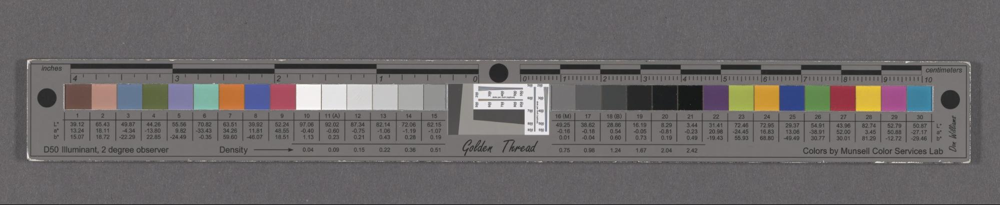
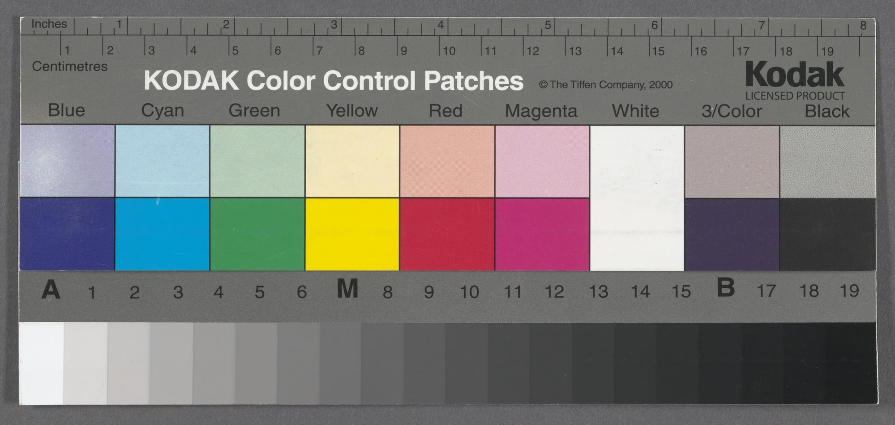
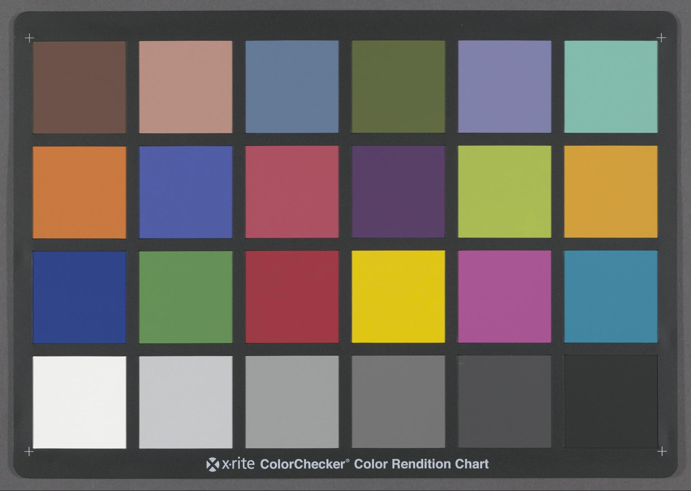
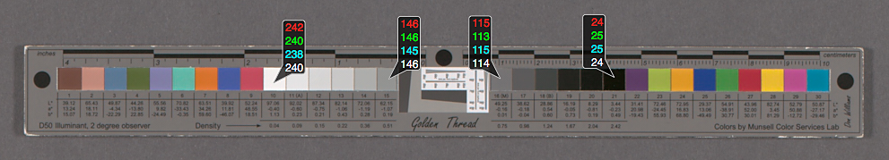
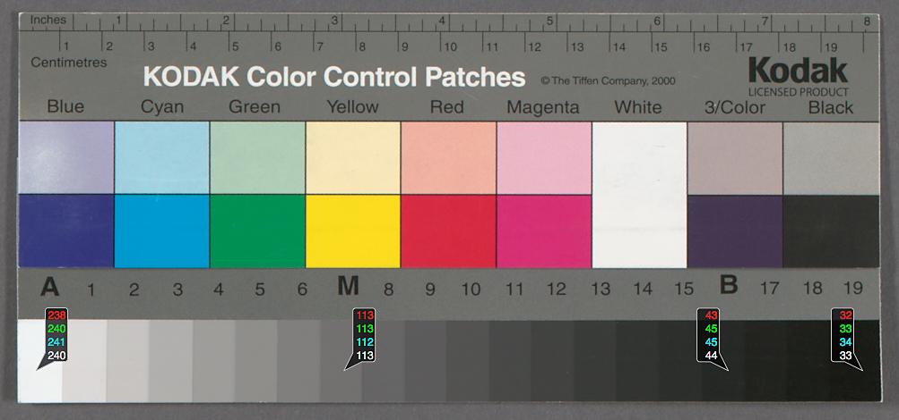
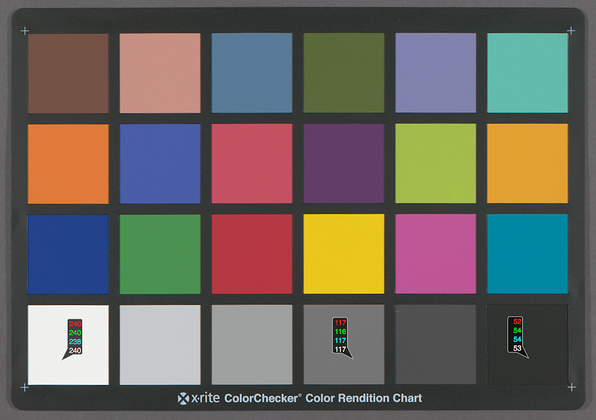

NYPL Vendor Digitization Specifications
Last updated August 2, 2018
These guidelines are meant to provide measurable objectives for scene-referred reprographic imaging files produced on behalf of New York Public Library. Specifications have been created based on both professional standards and internal workflows. While these specifications do not explicitly require adherence to the Federal Agencies Digital Guidelines Initiative 4 Star (FADGI 4 star), they were created with these guidelines in mind.
These specifications are subject to adjustment depending on the project. The vendor will be notified by New York Public Library at the beginning of a project if any adjustments to these specifications are needed.
Print Format Specifications
These specifications apply to all print formats. These specifications are also subject to adjustment depending on the project. The vendor will be notified by New York Public Library at the beginning of a project if any adjustments need to be made.
For each object, the vendor will provide:
- Preservation Master Files
- Service Files
- Technical Metadata
Image Specifications for All Print Format Files
These specifications apply to all print formats. Both the Preservation Master Files and the Service Files for every print format will adhere to these specifications. Additionally, both the Preservation Master Files and the Service Files will follow the conventions and technical specifications of the uncompressed TIFF file format. Two files, one Preservation Master File and one Service File, will be delivered per capture for every object. Images should be in full color.
Preservation Master Files, also called U files, will be saved with a “u” at the end of their file name. The “u” stands for “unsweetened” indicating that nothing has been done to the file to adjust or enhance it. It is the most authentic representation of the object.
Service Files, also called S files, will be saved with an “s” at the end of their file name. The “s” stands for “sweetened”, indicating that the files have been enhanced in some way to make them easier to use. In this case, the Service Files have been cropped and their colorspace has been changed.
More information about the differing specifications for Preservation Master Files and Service Files can be found in the Preservation Master File Specifications for All Print Formats and Service File Specifications for All Print Formats sections of this document
Targets
- An object-level colorchecker target should be included in every capture, or, if this is not possible, at the beginning of each session. (i.e. for each separate bound volume, newspaper, or folder of manuscripts).
- The target is used to check exposure, color, and neutral balance. Because of this, if the target is NOT included in each capture, then it is crucial that the conditions used to capture the target remain consistent throughout the session.
- The target must include both color and grayscale. (i.e. A 24 patch Gretagmacbeth/X-Rite ColorChecker target or Kodak/Tiffen Q13 style target). Examples given at end of this section.
- If multiple cameras are used in one session, corresponding targets should be included.
Visual Examples of Acceptable Targets

ISA Golden Thread Object Level Target

Kodak Q13 Color Control Patches Target

X-Rite ColorChecker Target
Exposure
- An even lighting adjustment will be applied to all files OR the background will be exposed evenly so that all RGB values fall within a 10 point range. It is important that the object be lit as evenly as possible.
- Exposure must be consistent across the surface of the object and throughout the session.
- No area of the object should have an RGB channel value of 255. If any area of the object has an RGB value of 255, it is overexposed beyond what we are able to work with.
- In order to ensure correct exposure, we have specifications for the colorchecker target. In a processed TIF, the target should have these values:
- When evaluating a target’s white patch the average value of the three channels (RGB) should read 240, with a tolerance of +/- 5 points.
- When evaluating a target’s darkest black patch the average value of the three channels (RGB) should read no lower than 15, with a tolerance of +/- 5 points. The readout for the black patch may vary depending on the target and colorspace.
Examples given at end of Color and Neutral Balance section.
- Each file will be neutrally balanced using the middle gray of the object level target.
- Each RGB channel of the middle gray square will be within +/- 1 point of each other. Examples given at end of this section.
- Color must be consistent across the surface of the object and throughout the session.
- There will be no desaturation or other adjustments that would affect the color of the image. The image should match the object as accurately as possible with regards to color
Visual Examples of Acceptable RGB Readouts for Exposure and Color Balance
(Readouts below based on Adobe RGB (1998) colorspace)

ISA Golden Thread Object Level Target
White Readouts: R - 242 Neutral Readouts: R - 146, 115 Black Readouts: R - 24
G - 240 G - 146, 113 G - 25
B - 238 B - 145, 115 B - 25

Kodak Q13 Color Control Patches Target
White Readouts: R - 238 Neutral Readouts: R - 112 Black Readouts: R - 32
G - 240 G - 113 G - 33
B - 241 B - 112 B - 34
X-Rite ColorChecker Target

White Readouts: R - 240 Neutral Readouts: R - 117 Black Readouts: R - 52
G - 240 G - 116 G - 54
B - 238 B - 117 B - 54
Sharpening
- Minimal sharpening will be applied to all files. There will be no more than 90% sharpening applied with a pixel radius of no more than 1.
Curves
- Tone curves will be set to linear for all captures.
- Files must NOT be delivered with an S curve.
Moire :
- If moire is present in the images, corrective actions must be applied.
Preservation Master File Specifications for All Print Formats
- The Preservation Master File is the highest level derivative of the original object and is created in an effort to produce a facsimile of the original with the highest level of authenticity possible.
- The Preservation Master File will be an unedited, unaltered, direct, and complete capture of the object.
- One (1) Preservation Master File will be produced for each physically or technically discrete part of the object. Further specifications about what is considered a discrete item are provided within the individual format specifications.
- The Preservation Master File name will have a “u” at the end of it. For example, a Preservation Master File name could look like this: Volume##_YYYY_#####u.tif.
- There will be a corresponding Service File for each Preservation Master File.
Image Specifications for Preservation Master Files for Print Formats
Bit Depth : 8 bits per RGB Channel
Colorspace (embedded ICC profile) : Adobe RGB (1998) or larger (i.e. ProPhoto RGB)
File Extension : .tif
Rotation and Cropping :
- The manuscript/object/page must fill the frame. No part of the object/page should be outside of the frame.
- If there is an object level colorchecker target, it should be included within the frame.
- The image should be oriented correctly, but should not be cropped. The object will typically be oriented in a top-down readable fashion based off of the first page of the object. All succeeding pages will be oriented based on the orientation of the first capture, even if they do not remain readable from the top down. Examples given at end of Service File Specifications for All Print Formats section.
- No adjustments should be made for keystoning. The images should not be distorted or adjusted in any way.
- The image will not be cropped in any way.
Resolution :
- All files will be delivered at a minimum 400 true ppi, without interpolation.
Service File Specifications for All Print Formats
- The Service File, or S File, is the file that will eventually be used by most people. For example, these are the files that are added to the NYPL repository and made available for public use when the project requires that this be done. In contrast, the Preservation Master File, or U file, is accessible by the public through Digital Collections when the “High Res” option is chosen for download.
- The Service File is a slightly different, cropped version of the Preservation Master File.
- One (1) Service File will be produced for each physically or technically discrete part of the object. Further specifications about what is considered a discrete item are provided within the individual format specifications.
- The Service File name will have an “s” at the end of it. For example, a Service File name could look like this: Volume##_YYYY_#####s.tif.
- There will be a corresponding Preservation Master File for each Service Copy File.
Image Specifications for Service Files for Print Formats
Bit Depth : 8 bits per RGB Channel
Colorspace (embedded ICC profile) : sRGB IEC61966-2.1
File Extension : .tif
Rotation and Cropping :
- The manuscript/object/page must fill the frame.
- The image should be oriented correctly. The object will typically be oriented in a top-down readable fashion based off of the first page of the object. All succeeding pages will be oriented based on the orientation of the first capture, even if they do not remain readable from the top down.
- The file must be cropped to the page/manuscript with a ¼” border or less around the entire page (including the gutter). No part of the manuscript should be cut off, and the edge of the page should still be visible. Examples given at end of this section.
- No adjustments should be made for keystoning. The images should not be distorted in any way.
- Deskewing will vary depending on the project. The vendor will be told at the beginning of a project whether deskewing will be necessary.
Resolution :
- All files will be delivered at minimum 400 true ppi, without interpolation.
Visual Examples of Correctly Oriented Objects
Img. 1
Img. 2
Postcard Orientation Example
Img. 1: Top-down readable orientation
Img. 2: Orientation matches orientation of first image
Img. 1
Img. 2
Postcard Orientation Example
Img. 1: Top-down readable orientation
Img. 2: Orientation matches orientation of the first image
Image Specifications for Bound Volumes
- All images for bound volumes will adhere to the specifications laid out in the Image Specifications for All Print Format Files, Preservation Master File Specifications for All Print Formats, and Service File Specifications for All Print Formats sections of this document.
- The vendor will capture the front and back of each page of the bound volume, including the front and back cover of the binding.
- If there are materials that do not fit this convention within the bound volume, such as fold out pages, inserts, oversized materials, etc., they should be imaged separately, but they should be delivered in the correct sequence. For example, an insert will be imaged as its own, distinct page. When the files are delivered, the capture for the insert will be in the same sequence as it was viewed in the book. The naming structure would look potentially look like this:
Volume01_1900_00005u.tif - Capture of the page preceding insert
Volume01_1900_00006u.tif - Capture of the insert - recto
Volume01_1900_00007u.tif - Capture of the insert - verso
Volume01_1900_00008u.tif - Capture of the page succeeding insert
Example given at end of this section .
- If the left and right sides of a bound volume are captured with two separate cameras, their exposure and color balance will be exactly the same.
- For every capture, the vendor will provide:
- A Preservation Master File image
- A Service File
Visual Example of A Correctly Photographed Fold Out Page
Img. 1 - Facing Page
Img. 2 - Folded Recto
Img. 3 - Unfolded Recto
Img. 1 - Unfolded Verso
Img. 2 - Folded Verso
Img. 3 - Facing Page
Image Specifications for Newspapers
- All images for newspapers will adhere to the specifications laid out in theImage Specifications for All Print Format Files , Preservation Master File Specifications for All Print Formats , and Service File Specifications for All Print Formats sections of this document.
- The vendor will capture the front and back of each page of the newspaper in its entirety.
- For every capture, the vendor will provide:
- A Preservation Master File image
- A Service File
Image Specifications for Manuscripts
- All images for manuscripts will adhere to the specifications laid out in theImage Specifications for All Print Format Files , Preservation Master File Specifications for All Print Formats , and Service File Specifications for All Print Formats sections of this document.
- The vendor will capture the front and back of each part of the manuscript in its entirety.
- For every capture, the vendor will provide:
- A Preservation Master File image
- A Service File
Non-Print Format Specifications
These specifications are also subject to adjustment depending on the project. The vendor will be notified by New York Public Library at the beginning of a project if any adjustments need to be made.
For each object, the vendor will provide:
- Preservation Master Files
- Service Files
- Technical Metadata
Image Specifications for Microfilm
Both the Preservation Master Files and the Service Copy Files will follow the conventions and technical specifications of the uncompressed TIFF file format. Two files, one Preservation Master File and one Service file, will be delivered per capture for every object.
Preservation Master File Specifications for Microfilm
- The Preservation Master File will be an unedited, unaltered, direct, and complete capture of the object.
- One (1) Preservation Master File will be produced for each physically or technically discrete part of the object.
- The Preservation Master File name will have a “u” at the end of it. For example, a Preservation Master File name could look like this: Volume##_YYYY_#####u.tif.
- There should be a corresponding Service File for each Preservation Master File.
Image Specifications for Preservation Master Files for Microfilm
Bit Depth : 8 bits
Colorspace (embedded ICC profile) : Gray Gamma 2.2
File Extension : .tif
Rotation and Cropping :
- The image must fill the frame.
- The image should be oriented correctly, but should not be cropped. The object will typically be oriented in a top-down readable fashion based off of the first page of the object. All succeeding pages will be oriented based on the orientation of the first capture, even if they do not remain readable from the top down.
- The image will not be cropped in any way.
Resolution :
- All files will be delivered at minimum 3500 true ppi.
Targets
- All filmed targets will be digitized. These targets should include, at minimum, a “Start” target, a resolution target (such as an Image Evaluation Test Target) and and “End” target. Other targets may be included, such as targets that have information about what collection the materials are from, the reduction ratio, missed pages, or if the material is continued on the next reel. All of these digitized targets will be included in the final set of deliverables.
Service File Specifications for Microfilm
- The Service File is a cropped and slightly more edited version of the Preservation Master File.
- One (1) Service File will be produced for each physically or technically discrete part of the object.
- The Service File name will have an “s” at the end of it. For example, a Service File name could look like this: Volume##_YYYY_#####s.tif.
- There should be a corresponding Preservation Master File for each Service File.
Image Specifications for Service Files for Microfilm
Bit Depth : 8 bits
Colorspace (embedded ICC profile) : Gray Gamma 2.2
File Extension : .tif
Rotation and Cropping :
- The image must fill the frame.
- The image should be oriented correctly. The object will typically be oriented in a top-down readable fashion based off of the first page of the object. All succeeding pages will be oriented based on the orientation of the first capture, even if they do not remain readable from the top down.
- The file must be cropped to the page with a ¼” border or less around the entire page (including the gutter). No part of the image should be cut off, and the edge of the page should still be visible.
Resolution :
- All files will be delivered at minimum 3500 true ppi.
Targets
- All filmed targets will be digitized. These targets should include, at minimum, a “Start” target, a resolution target (such as an Image Evaluation Test Target) and and “End” target. Other targets may be included, such as targets that have information about what collection the materials are from, the reduction ratio, missed pages, or if the material is continued on the next reel. All of these digitized targets will be included in the final set of deliverables.
Additional Specifications
File Handling Specifications
Files must be delivered in a consistent way across all hard drives. Files will be organized into an hierarchical directory format based on item, volume, or other logical unit of separation, depending on the material being worked with. Files will be named in sequential order, with file names directly corresponding to their organizational structure. New York Public Library will provide both a directory structure and file naming conventions.
Example of file naming and organization at end of this section.
File Organization
- Files will be organized in an hierarchical structure that directly correlates to the organization structure of the objects being digitized, e.g. by volume, issue, year, or reel.
- Preservation Master Files and Service Files will have separate directories. These directories should be identical, except for the Preservation Master folders containing Preservation Master Files, and the Service folders containing Service Files.
File Naming
- File names must have the proper .tif extension.
- File and directory names must NOT contain:
- Special Characters
- Spaces
- Preservation Master Files will have a “u” at the end of the filename, directly before the extension.
- Service Files will have an “s” at the end of the filename, directly before the extension.
- Other than the “u” and the “s” at the ends of the filenames, Preservation Master Files and Service Files will follow the same naming convention. For example, if the the Preservation Master File is named Project_YYYYMMDD_Issue##u.tif, then the corresponding Service File will be named Project_YYYYMMDD_Issue##s.tif.
File Count
- There will be the same number of files in the Preservation Master File Directory as there are in the corresponding Service File Directory.
- There should be the same number of images per object in both the Preservation Master File Directory and its corresponding Service File Directory.
- Each Preservation Master File will correspond to a cropped Service File.
File Delivery
- Files must be delivered on hard drives formatted for interoperability between Mac OSx and Windows. Recommended hard drive formatting is exFAT.
- Files must be delivered with checksum manifests at the directory level. The purpose of image file checksums is to ensure that items are transferred safely throughout the entire chain of custody, and to ensure their long-term preservation. NYPL recommends using the BagIt file packaging format and creating “bags” for each directory containing images. If vendor is unable to utilize the BagIt packaging format, a spreadsheet with file names and corresponding checksums will be satisfactory.
- Delivered files must not include Thumbs.db, .DS_Store, and other hidden system files.
- There must be a manifest for the digital files that indicates which materials are stored on which hard drives. The manifest can be created at the hard drive level or for the project overall.
Visual Example of Correct Folder Structure
Top Level Folders - Preservation Master File and Service folders with
checksum files

Preservation Master folder and Service folder organized by volume

|

|
||
Volume folders organized by issue
Issue folders with images.

|

|
||
Images with file names following convention:
Preservation Master File - Volume##_Issue##_YYYYMMDD_#####u.tif
Service File - Volume##_Issue##_YYYYMMDD_#####s.tif.
The file name of the image should reflect where the image is in the folder structure.
If the image is the first capture in Preservation_Files - Volume_01 - Issue_01, the file name will be Volume01_Issue01_19500101_00001u.tif.
If the image is the first capture in Service_Files - Volume_01 - Issue_01, the file name will be Volume01_Issue01_19500101_00001s.tif.
The folder structure and file naming conventions are the same in both the Preservation Master folder and Service File folder.
Folder structure and file naming consistent across entire hard drive and all delivered files.

|

|
||
Technical Metadata Specifications
Technical metadata must be embedded into the image file according to the EXIF standard. Technical metadata should not be removed from files when creating derivatives. When using software to process files, ensure that any options to remove EXIF metadata are off.
Quality Control
The vendor must perform quality control for all deliverables. This must include, at minimum:
- Confirmation that all required files are present.
- Confirmation that all required files are named correctly.
- Confirmation that all images conform to the specifications outlined above.
New York Public Library will conduct their own quality control within 30 days of receiving the files. If errors are discovered, either by the vendor or by New York Public Library, any necessary work to fix the issues will be performed by the vendor at no additional cost.
** Waiting for feedback from Becky Fifield regarding these specs
Handling of Physical Objects
The vendor will use great care in the handling of the original materials. The vendor will complete a thorough visual inspection and if any physical problems are detected the vendor will contact New York Public Library.
When materials are not being transferred or imaged, they will be stored in an environment that is free of food, water, and sunlight. The temperature in the storage area will be between 45-65°F with a relative humidity of 30-50%.
Shipment and Delivery
Shipment of materials both to and from the vendor will be arranged by New York Public Library. There are two options for shipment and delivery:
- The vendor will pick up and drop off the volumes using their own shipping tools.
- The materials will be shipped using a shipper selected by New York Public Library
New York Public Library will be responsible for shipping costs.
The vendor shall arrange a shipment of hard drives over the course of the contract using an agreed-upon schedule. The vendor will make regular shipments of file deliverables throughout the project. New York Public Library must approve the method of shipment for the hard drives; the vendor shall submit an invoice for reimbursement of shipping costs.
Once New York Public Library has completed quality control of all the files, the original materials may be prepared for return to New York Public Library. The vendor will repack all original materials into the original shipping containers.
Reshipment of the original materials will be arranged by New York Public Library